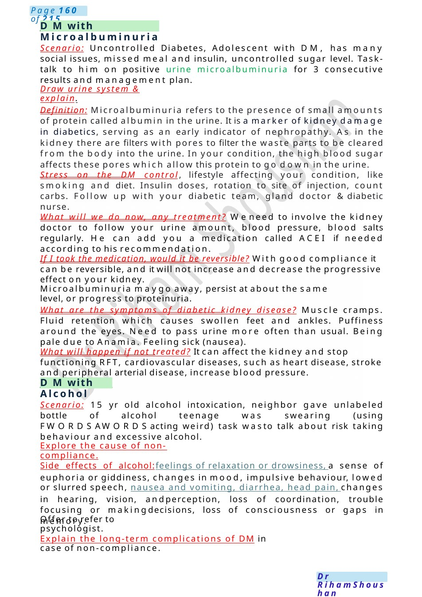

DMwith Alcohol
Scenario: Uncontrolled Diabetes, Adolescent with DM, has many social issues, missed meal and insulin, uncontrolled sugar level. Task- talk to him on positive urine microalbuminuria for 3 consecutive results and management plan. Draw urine system & explain.
Scenario Summary
Scenario: Uncontrolled Diabetes, Adolescent with DM, has many social issues, missed meal and insulin, uncontrolled sugar level. Task- talk to him on positive urine microalbuminuria for 3 consecutive results and management plan. Draw urine system & explain.
Full Original Scenario

DMwith Microalbuminuria
DMwith Alcohol
Scenario: Uncontrolled Diabetes, Adolescent with DM, has many social issues, missed meal and insulin, uncontrolled sugar level. Task- talk to him on positive urine microalbuminuria for 3 consecutive results and management plan.
Draw urine system & explain.
Definition: Microalbuminuria refers to the presence of small amounts of protein called albumin in the urine. It is a marker of kidney damage in diabetics, serving as an early indicator of nephropathy. As in the kidney there are filters with pores to filter the waste parts to be cleared from the body into the urine. In your condition, the high blood sugar affects these pores which allow this protein to go down in the urine.
Stress on the DM control, lifestyle affecting your condition, like smoking and diet. Insulin doses, rotation to site of injection, count carbs. Follow up with your diabetic team, gland doctor &diabetic nurse.
What will we do now, any treatment? Weneed to involve the kidney doctor to follow your urine amount, blood pressure, blood salts regularly. He can add you a medication called ACEI if needed according to his recommendation.
If I took the medication, would it be reversible? With good compliance it can be reversible, and it will not increase and decrease the progressive effect on your kidney.
Microalbuminuria maygo away, persist at about the same level, or progress to proteinuria.
What are the symptoms of diabetic kidney disease? Muscle cramps. Fluid retention which causes swollen feet and ankles. Puffiness around the eyes. Need to pass urine more often than usual. Being pale due to Anamia. Feeling sick (nausea).
What will happen if not treated? It can affect the kidney and stop functioning RFT, cardiovascular diseases, such as heart disease, stroke and peripheral arterial disease, increase blood pressure.
Scenario: 15 yr old alcohol intoxication, neighbor gave unlabeled bottle of alcohol teenage was swearing (using FWORDSAWORDSacting weird) task wasto talk about risk taking behaviour and excessive alcohol.
Explore the cause of non-compliance.
Side effects of alcohol:feelings of relaxation or drowsiness, a sense of euphoria or giddiness, changes in mood, impulsive behaviour, lowed or slurred speech, nausea and vomiting, diarrhea, head pain, changes in hearing, vision, andperception, loss of coordination, trouble focusing or makingdecisions, loss of consciousness or gaps in memory.
Offer to refer to psychologist.
Explain the long-term complications of DM in case of non-compliance.

DMwith Hypoglycemic Fits
CFreleated DM
Symptoms of hypoglycemia & proper action for that (in case you felt you are really hunger, cold sweats or hand shivering, it is better to take something sweat or a pit of sandwich as this means you have low blood sugar).
Team: Consultant, Gland doctor, Diabetic Nurse, Dietician, Laise with School, Talking Therapist.
Scenario: Type 1 DMchild came in with seizures. talk about management plan regarding recurrent hypoglycemia.
Explanation about fits meaning (Aseizure is a disturbance of electrical activity in the brain. There are different sorts of seizures which are sometimes called ‘fits’ or ‘convulsions in your condition the reason for that is the very low sugar level in your body. Often children become unconscious and are not able to respond to you. They mayfall and there can be jerking of the limbs).
Special message: complications of DM,complications of hypoglycaemia, how to detect hypos and how to deal with hypoglycaemia, advice for fit if happen again, MDT. Wearing BRACELET.
What do you do if a child is having a convulsion again? Try to stay calm and ensure the child is safe fromharmand movesany hard or sharp objects fromnearby. After the seizure ends, the safest position in which to put the child is the recovery position with their head tilted slightly backwards. Loosen any clothing, especially around the neck. Don't hold them down. Don't put anything in their mouth. don't put ice, use normal temperature. If the convulsion lasts longer than five minutes or the child does not recover quickly or affects one side of the body, then youshould call 999. If this is the child’sfirst convulsion they should be reviewed by a doctor.
If he is in a hypoglycaemic coma. After calling ambulance, you will give him glucagon injection, the diabetes nurse to show you howto use it.
It is an orange box, in which you will find a powdered medicine in a vial and a syringe prefilled with water, you will empty the syringe in this vial of medicine and shake it very slowly and after that you will draw the medicine and inject it the outer side of middle third of the thigh after that you will put him on his side cause this medicine it can cause some nausea and may through up so, do not worry just put him on his side.
So muchrapport with empathy
He knows already what's CF so, prior knowledge about the recent deterioration.
Explain the results of test mentioned in the scenario came positive for DM.
Draw & explain why CF got DM after age of 10y: in our body there's a leaf like structure called pancreas (point on the drawing &your body) secretes chemical substance which we call it insulin hormone. It acts as a key to open the door to allow passage of sugar inside the cell and provide it with its fuel. In CF all body secretions are viscid and sticky which close the tubes and holes (ducts & sinusoids) and destroy the insulin. Thats whythere's not enough insulin inside your body.